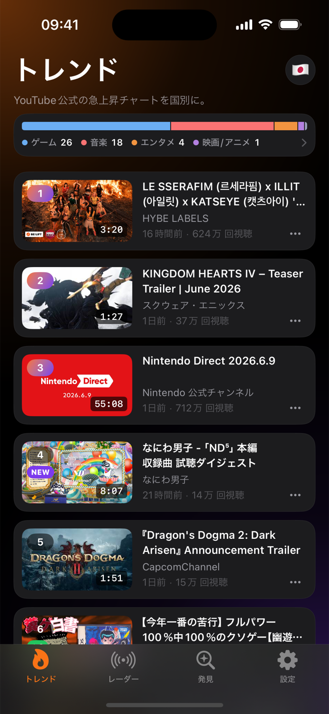
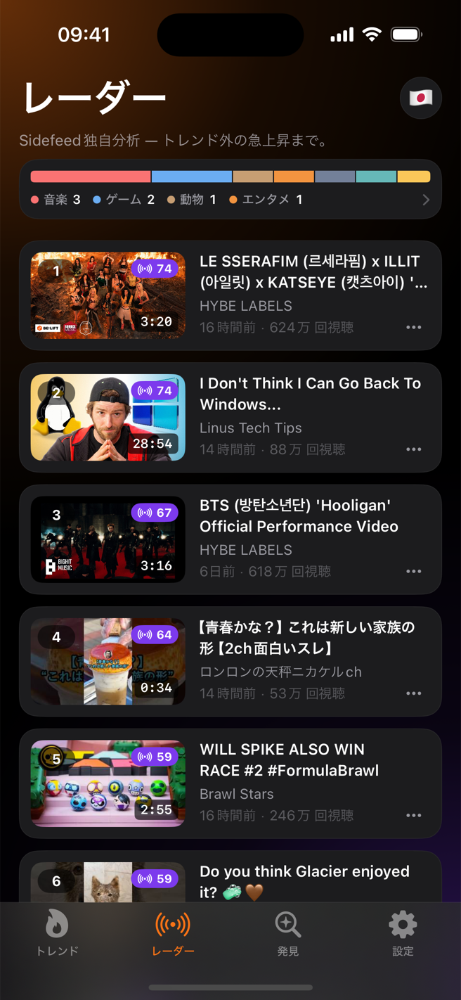
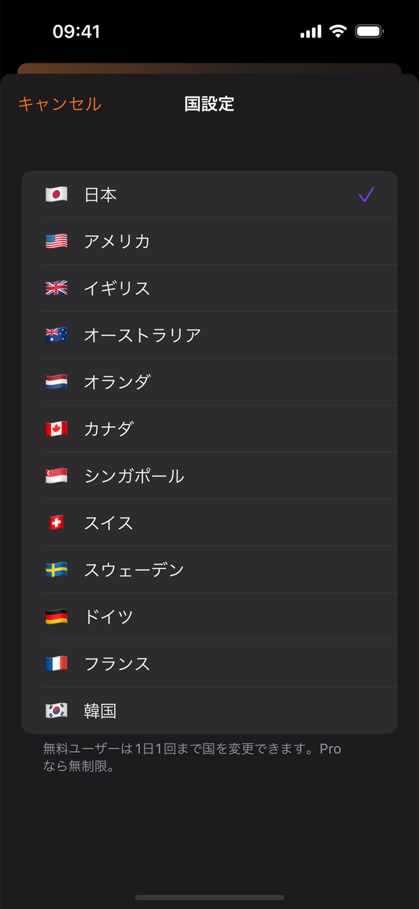

YouTubeを開くと、アルゴリズムが「あなた向け」の動画ばかり見せてきます。Sidefeedは代わりに3つのランキングを見せます。12ヶ国の公式人気チャート「トレンド」、公式チャートに入る前の急上昇をSidefeedが独自に計算して捉える「レーダー」、そして音楽・ゲームなど14ジャンルの人気動画を集めた「発見」。次の動画は、勘ではなくデータを確かめてから作りましょう。

国旗ボタンを押すと、アメリカ・日本・韓国など12ヶ国から選べます。その国の人たちがいま一番見ているYouTube動画がすぐに表示されます。
すべての動画にマークが付きます。▲は6時間前より順位が上がった、▼は下がった、NEWはチャートに入ったばかり、という意味です。勢いよく上がってくる動画はTop Moversとレーダータブがまとめて見せてくれます。
動画をタップすると、順位がどう変わってきたか、再生数がどれだけ速く伸びているかを先に見せてくれます。参考になる動画は「後で見る」に保存すれば、iCloud経由でiPhoneでもiPadでも見られます。
今日の1位は誰でも見られます。本当のシグナルは「6時間前は18位だったのに、いま3位」という動画。まさにいま伸びている、という意味だからです。Sidefeedは一日中チャートを保存しておき、すべての動画の順位がどう変わったかを正確に表示します。
公式チャートだけでは足りません。Sidefeedが独自に計算する「レーダー」がチャート圏外から伸びてくる動画を捉え、「発見」が14ジャンルごとの人気動画を見せてくれます。すべて公開データなので、誰が見ても同じ画面 — アルゴリズムのおすすめに隠れた本当のトレンドです。
YouTube公式の人気チャートです。ここに6時間の順位変動マーク、急上昇まとめ（Top Movers）、ジャンル別の割合バーを足しました。
Sidefeedが独自に計算したランキング。まだ公式チャートに入っていないけれど、勢いよく伸びている動画を先に捉えます。
音楽・ゲーム・お笑いなど14ジャンルごとに人気動画をまとめて表示。あなたの好みとは関係なく、いま本当に人気のある動画そのままです。
国旗ボタンひとつで国を切り替えて比較できます。いまソウルの1位はどんな動画でしょう？


Googleアカウントでのログインは不要で、視聴履歴も使いません。だからアルゴリズムが選んだフィードではなく、誰にとっても同じ「本当の人気順位」が見られます。
Sidefeedのサーバーが一日中、人気チャートを保存しています。保存したもの同士を比べて、各動画の順位が上がったか下がったかを計算します。YouTubeアプリでは見られない情報です。
動画をタップしてもすぐYouTubeには飛びません。現在順位・6時間の変動・再生ペースを小さなカードで先に見せて、「YouTubeで見る」はその後です。
長い動画だけ見たいときは、設定でスイッチをひとつ入れるだけ。すべての画面からショート動画が消えます。
参考にしたい動画を保存すれば、自分のiCloud経由でiPhoneでもiPadでも同じように見られます。
見たくないチャンネルはブロック、興味のない動画は非表示にできます。リサーチ画面がすっきり保てます。